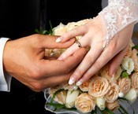

פתיחת תיק נישואין

הרישום לנישואין הינו הליך פרוצדוראלי המתבצע בלשכות הנישואין במועצות הדתיות או דתיות אזוריות ברחבי הארץ.
על פי החוק, הגיל המותר לנישואין הוא החל מגיל 18. חתן / כלה שטרם מלאו להם 18 שנים, נדרשים להמציא לרשם הנישואין אישור מבית המשפט לענייני משפחה, המתיר להם להינשא.
על בני זוג הבאים להירשם לנישואין, להופיע יחד בלשכת רישום נישואין במועצה הדתית שבאזור מגוריהם של אחד מבני הזוג בהקדם האפשרי ולא יאוחר מ- 45 יום לפני מועד הנישואין.
בעת הרישום, רשם הנישואין ממלא, בין היתר, את פרטי בני הזוג בתיק הנישואין, את מועד עריכת החופה, ומשבץ במידת הצורך רב לעריכת החופה.
כשבוע לפני החופה, ולאחר שהושלמו כל הנדרש וכל הבירורים בתיק הנישואין, יקבלו בני הזוג
את ה"כתובה", והם ימסרוה לידי הרב המקדש.
לפתיחת התיק על בני הזוג להמציא:
*תעודות זהות מלאות ועדכניות של משרד הפנים כולל הספח.
* שלוש תמונות פספורט של כל אחד מבני הזוג.
* תעודת נישואין או כתובה מקורית של ההורים.
* תשלום אגרה. (לפי תקנות שרותי הדת היהודיים)
האגרה מתעדכנת בהתאם לפרסום ברשומות של השר לשרותי דת
הנחה באגרה בשיעור של 40% ניתנת במידה ואחד מבני הזוג הוא/היא:
חייל בשירות סדיר או שירות לאומי.
סטודנט או תלמיד ישיבה עד גיל 30.
עולה חדש/ה בשנתיים הראשונות לעלייתו ארצה.
נכה.
עיוור או לקוי ראייה.
מקרה סעד. (בכפוף לאישור הלשכה לשירותים חברתיים).
עבור תשלום האגרה מקבלים בני הזוג את השירותים הבאים:
פתיחת תיק נישואין
פרסום בעיתונות
כתובה
תעודת נישואין
רב לעריכת החופה והקידושין. (במידה והחתונה נערכת מחוץ לעיר, על בני הזוג לשאת בהוצאות הסעתו והחזרתו של הרב).
עדים:
לאחר הרישום לנישואין, יש להפנות אל רשם הנישואין שני עדים/ות יהודים/ות שאינם קרובי משפחה לחתן או לכלה ואינם קרובים זה לזה אשר יעידו על מעמדם האישי של בני הזוג.
תעודת רווק/ה פנוי/ה
מי מבני הזוג שאינו מתגורר בשטח השיפוט שבו נפתח תיק הנישואין, נדרש להמציא תעודת רווק/ה פנוי/ה מלשכת הרבנות שבמקום מגוריו.
במקרים הבאים יש להמציא בפני רשם הנישואין את המסמכים הבאים:
* גרוש או גרושה ימציאו תעודת גירושין מקורית ואת מעשה בית הדין המקורי המצורף לתעודה. היה והתעודות אבדו, ניתן יהיה להמציא העתקים נאמנים למקור בחתימת בית הדין הרבני בלבד, ולא ע"י עו"ד. תעודת הגירושין המקורית תישאר לצמיתות בתיק הנישואין.
* אלמן או אלמנה ימציאו תעודת פטירה מקורית / או נאמן למקור בחתימת משרד הפנים. אלמנה להמציא תעודת זהות של אחד מילדיה או תעודת חליצה בהתאם לנסיבות ובהתאם להנחיות רשם הנישואין.
* גר או גיורת – ימציאו תעודת גרות רשמית ומקורית המוכרת ע"י הרבנות הראשית לישראל, וכן תעודת המרה רשמית ומקורית ממדינת ישראל.
בני זוג מהעדה האתיופית ימציאו אישור יהדות רשמי ומקורי מהרבנים המוסמכים לכך.
* מאומץ או מאומצת – יופנו ע"י מח' הנישואין אל בית הדין הרבני לבירור מעמדם.
* תייר או תיירת ימציאו דרכון, אישור רווקות ואישור יהדות מהרבנות שבמקום מגוריהם המוכרת ע"י הרבנות הראשית לישראל או מבית דין רבני בישראל.
עולים מחו"ל יופנו על ידי מחלקת הנישואין בה נפתח תיק הנישואין, אל בית הדין הרבני האזורי, לקבלת פסק דין על יהדותם ורווקותם.
במידה ובת הזוג הינה גרושה, חלוצה, גיורת או בת נכרי, על בן הזוג להמציא אישור רשמי מרב מוכר בר סמכא המעיד כי הוא אינו כהן. אישור זה ניתן לאחר שהתקבלה הצהרת האב או קרוב משפחה מצד האב, או מרב בית הכנסת, או מגבאי בית הכנסת בו מבקר המבקש, הנאמנים על הרבנות המקומית, ו/או על פי הנחיות אשר יינתנו על ידי לשכת הנישואין.
במקרה של הריון – יש צורך ב"הצהרת אבהות". פרטים יימסרו ע"י מנהל מח' הנישואין במקום.
בירורים מיוחדים בבית הדין:
במידה ונדרשים בירורים מיוחדים בבית הדין כמו בירור יהדות, היתר נישואין, בירור מעמד בכשרות מאומצים לנישואין יש לפנות מוקדם ככל האפשר אל מנהל מח' הנישואין – גם אם טרם נפתח תיק הנישואין, לקבלת הסבר והפנייה רשמית אל בית הדין הרבני האזורי. הבירורים בבתי הדין הרבניים נעשים בהתאם להפניה רשמית של מנהל מח' הנישואין. ובדרך זו, הליך הבירור בבית הדין מתקיים ללא עלות כספית. (יתר הההליכים מחויבים בתשלום אגרה)